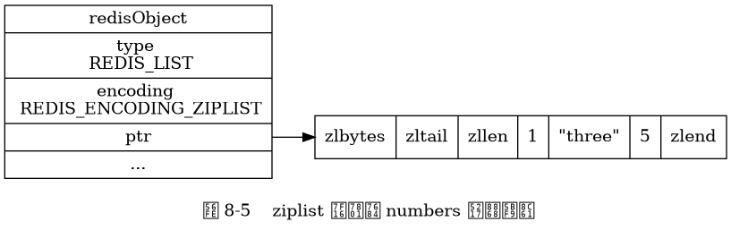
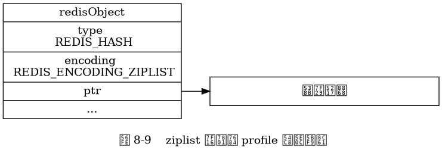
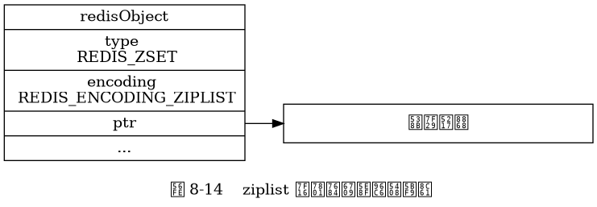

第 8 章：对象¶
字符串对象¶
int 编码的字符串对象
![digraph {
label = "\n 图 8-1 int 编码的字符串对象";
rankdir = LR;
node [shape = record];
redisObject [label = " redisObject | type \n REDIS_STRING | encoding \n REDIS_ENCODING_INT | <ptr> ptr | ... "];
node [shape = plaintext];
number [label = "10086"]
redisObject:ptr -> number;
}](_images/graphviz-6297c4480a18f09555d364ae523d6cf0cd87ea1c.png)
raw 编码的字符串对象。
![digraph {
label = "\n 图 8-2 raw 编码的字符串对象";
rankdir = LR;
node [shape = record];
redisObject [label = " redisObject | type \n REDIS_STRING | encoding \n REDIS_ENCODING_RAW | <ptr> ptr | ... "];
sdshdr [label = " <head> sdshdr | free \n 0 | len \n 37 | <buf> buf"];
buf [label = " { 'L' | 'o' | 'n' | 'g' | ... | 'k' | 'i' | 'n' | 'g' | ' ' | '.' | '.' | '.' | '\\0' } " ];
//
redisObject:ptr -> sdshdr:head;
sdshdr:buf -> buf;
}](_images/graphviz-af354113a33a68981d4887d049e36c56b4bba0fc.png)
embstr 编码的字符串对象。
![digraph {
label = "\n 图 8-4 embstr 编码的字符串对象";
node [shape = record];
embstr [ label = " { redisObject | { type \n REDIS_STRING | encoding \n REDIS_ENCODING_EMBSTR | <ptr> ptr | ... } } | { sdshdr | { free \n 0 | len \n 5 | { buf | { <buf> 'h' | 'e' | 'l' | 'l' | 'o' | '\\0'}} }} " ];
embstr:ptr -> embstr:buf;
}](_images/graphviz-d061b238a6b9c9f913d65b2d4c7e4645d1cb6aac.png)
列表对象¶
ziplist 编码的列表对象。

linkedlist 编码的列表对象。
![digraph {
label = "\n 图 8-6 linkedlist 编码的 numbers 列表对象";
rankdir = LR;
node [shape = record];
redisObject [label = " redisObject | type \n REDIS_LIST | encoding \n REDIS_ENCODING_LINKEDLIST | <ptr> ptr | ... "];
subgraph cluster_linked_list {
label = "链表";
style = dashed;
node1 [label = "StringObject \n 1 "];
node2 [label = "StringObject \n \"three\""];
node3 [label = "StringObject \n 5 "];
node1 -> node2 -> node3;
}
redisObject:ptr -> node1;
}](_images/graphviz-b25b4b11b1795003534d7591ff762761c507ed4f.png)
哈希对象¶
ziplist 编码的哈希对象。

![digraph {
label = "\n 图 8-10 profile 哈希对象的压缩列表底层实现";
//
node [shape = record];
ziplist [label = " zlbytes | zltail | zllen | <key1> \"name\" | <value1> \"Tom\" | <key2> \"age\" | <value2> 25 | <key3> \"career\" | <value3> \"Programmer\" | zlend "];
node [shape = plaintext];
edge [style = dashed];
kv1 [label = "第一个添加的键值对"];
kv1 -> ziplist:key1 [label = "键"];
kv1 -> ziplist:value1 [label = "值"];
kv2 [label = "第二个添加的键值对"];
kv2 -> ziplist:key2;
kv2 -> ziplist:value2;
kvN [label = "最新添加的键值对"];
kvN -> ziplist:key3;
kvN -> ziplist:value3;
}](_images/graphviz-e39cf16d63d6cdb8a267a0990b10cb54c8bffe20.png)
hashtable 编码的哈希对象。
![digraph {
label = "\n 图 8-11 hashtable 编码的 profile 哈希对象";
rankdir = LR;
//
node [shape = record];
redisObject [label = " redisObject | type \n REDIS_HASH | encoding \n REDIS_ENCODING_HT | <ptr> ptr | ... "];
dict [label = " <head> dict | <key1> StringObject \n \"age\" | <key2> StringObject \n \"career\" | <key3> StringObject \n \"name\" ", width = 1.5];
age_value [label = "StringObject \n 25"];
career_value [label = "StringObject \n \"Programmer\""];
name_value [label = "StringObject \n \"Tom\""];
//
redisObject:ptr -> dict:head;
dict:key1 -> age_value;
dict:key2 -> career_value;
dict:key3 -> name_value;
}](_images/graphviz-22ce547199dc47efbd5cc666c8a417d1e9330fa4.png)
集合对象¶
intset 编码的集合对象。
![digraph {
label = "\n 图 8-12 intset 编码的 numbers 集合对象";
rankdir = LR;
node [shape = record];
redisObject [label = " redisObject | type \n REDIS_SET | encoding \n REDIS_ENCODING_INTSET | <ptr> ptr | ... "];
intset [label = " <head> intset | encoding \n INTSET_ENC_INT16 | length \n 3 | <contents> contents "];
contents [label = " { 1 | 3 | 5 } "];
redisObject:ptr -> intset:head;
intset:contents -> contents;
}](_images/graphviz-a50305d160957e9005f08de321086a742382ffa5.png)
hashtable 编码的集合对象。
![digraph {
label = "\n 图 8-13 hashtable 编码的 fruits 集合对象";
rankdir = LR;
node [shape = record];
redisObject [label = " redisObject | type \n REDIS_SET | encoding \n REDIS_ENCODING_HT | <ptr> ptr | ... "];
dict [label = " <head> dict | <cherry> StringObject \n \"cherry\" | <apple> StringObject \n \"apple\" | <banana> StringObject \n \"banana\" ", width = 1.5];
redisObject:ptr -> dict:head;
node [shape = plaintext, label = "NULL"];
dict:apple -> nullX;
dict:banana -> nullY;
dict:cherry -> nullZ;
}](_images/graphviz-067f30b81066463cca9b46f4db8adb08b137da6e.png)
有序集合对象¶
ziplist 编码的有序集合对象。

![digraph {
label = "\n 图 8-15 有序集合元素在压缩列表中按分值从小到大排列";
//
node [shape = record];
ziplist [label = " zlbytes | zltail | zllen | <banana> \"banana\" | <banana_price> 5.0 | <cherry> \"cherry\" | <cherry_price> 6.0 | <apple> \"apple\" | <apple_price> 8.5 | zlend "];
node [shape = plaintext];
banana [label = "分值最少的元素"];
cherry [label = "分值排第二的元素"];
apple [label = "分值最大的元素"];
//
banana -> ziplist:banana [label = "成员"];
banana -> ziplist:banana_price [label = "分值"];
cherry -> ziplist:cherry;
cherry -> ziplist:cherry_price;
apple -> ziplist:apple;
apple -> ziplist:apple_price;
}](_images/graphviz-b90f3828a4bedd91a87cc7557aa567f0c8f40373.png)
skiplist 编码的有序集合对象。
![digraph {
label = "\n 图 8-16 skiplist 编码的有序集合对象";
rankdir = LR;
node [shape = record];
redisObject [label = " redisObject | type \n REDIS_ZSET | encoding \n REDIS_ENCODING_SKIPLIST | <ptr> ptr | ... "];
zset [label = " <head> zset | <dict> dict | <zsl> zsl "];
node [shape = plaintext];
dict [label = "..."];
zsl [label = "..."];
redisObject:ptr -> zset:head;
zset:dict -> dict;
zset:zsl -> zsl;
}](_images/graphviz-75ac3cd55598f30499aa0351d2799200f336aca2.png)
![digraph {
rankdir = LR;
//
node [shape = record];
zset [label = " <head> zset | <dict> dict | <zsl> zsl "];
dict [label = " <head> dict | ... | <ht0> ht[0] | ... "];
ht0 [label = " <head> dictht | ... | <table> table | ... "];
table [label = " <banana> StringObject \n \"banana\" | <apple> StringObject \n \"apple\" | <cherry> StringObject \n \"cherry\" "];
node [shape = plaintext];
apple_price [label = "8.5"];
banana_price [label = "5.0"];
cherry_price [label = "6.0"];
//
zset:dict -> dict:head;
dict:ht0 -> ht0:head;
ht0:table -> table:head;
table:apple -> apple_price;
table:banana -> banana_price;
table:cherry -> cherry_price;
//
node [shape = record, width = "0.5"];
//
l [label = " <header> header | <tail> tail | level \n 5 | length \n 3 "];
subgraph cluster_nodes {
style = invisible;
header [label = " <l32> L32 | ... | <l5> L5 | <l4> L4 | <l3> L3 | <l2> L2 | <l1> L1 "];
bw_null [label = "NULL", shape = plaintext];
level_null [label = "NULL", shape = plaintext];
A [label = " <l4> L4 | <l3> L3 | <l2> L2 | <l1> L1 | <backward> BW | 5.0 | StringObject \n \"banana\" "];
B [label = " <l2> L2 | <l1> L1 | <backward> BW | 6.0 | StringObject \n \"cherry\" "];
C [label = " <l5> L5 | <l4> L4 | <l3> L3 | <l2> L2 | <l1> L1 | <backward> BW | 8.5 | StringObject \n \"apple\" "];
}
subgraph cluster_nulls {
style = invisible;
n1 [label = "NULL", shape = plaintext];
n2 [label = "NULL", shape = plaintext];
n3 [label = "NULL", shape = plaintext];
n4 [label = "NULL", shape = plaintext];
n5 [label = "NULL", shape = plaintext];
}
//
l:header -> header;
l:tail -> C;
header:l32 -> level_null;
header:l5 -> C:l5;
header:l4 -> A:l4;
header:l3 -> A:l3;
header:l2 -> A:l2;
header:l1 -> A:l1;
A:l4 -> C:l4;
A:l3 -> C:l3;
A:l2 -> B:l2;
A:l1 -> B:l1;
B:l2 -> C:l2;
B:l1 -> C:l1;
C:l5 -> n5;
C:l4 -> n4;
C:l3 -> n3;
C:l2 -> n2;
C:l1 -> n1;
bw_null -> A:backward -> B:backward -> C:backward [dir = back];
zset:zsl -> l:header;
// HACK: 放在开头的话 NULL 指针的长度会有异样
label = "\n 图 8-17 有序集合元素同时被保存在字典和跳跃表中";
}](_images/graphviz-966f2bfe64e82f8f1da199e3651fdeea42a1c3b6.png)
类型检查与命令多态¶
LLEN 命令执行时的类型检查过程。
![digraph {
label = "\n 图 8-18 LLEN 命令执行时的类型检查过程";
//
call_command [label = "客户端发送 LLEN <key> 命令", shape = box];
check_type [label = "服务器检查 \n 键 key 的值对象\n是否列表对象", shape = diamond];
execute_command [label = "对键 key 执行 LLEN 命令", shape = box];
type_error [label = "返回一个类型错误", shape = box];
//
call_command -> check_type;
check_type -> execute_command [label = "是"];
check_type -> type_error [label = "否"];
}](_images/graphviz-cdf9d81e7c4de6bb34c8390f6936deb602f612b1.png)
LLEN 命令的多态行为。
![digraph {
label = "\n 图 8-19 LLEN 命令的执行过程";
//
node [shape = box];
call_command [label = "客户端发送 LLEN <key> 命令"];
check_type [label = "服务器检查 \n 键 key 的值对象\n是否列表对象", shape = diamond];
//execute_command [label = "对键 key 执行 LLEN 命令"];
select_encoding [label = "对象的编码是 \n ziplist 还是 linkedlist ？", shape = diamond];
ziplist [label = "调用 ziplistLen 函数 \n 返回压缩列表的长度"];
linkedlist [label = "调用 listLength 函数 \n 返回双端链表的长度"];
type_error [label = "返回一个类型错误"];
//
call_command -> check_type;
//check_type -> execute_command [label = "是"];
check_type -> type_error [label = "否"];
//execute_command -> select_encoding;
check_type -> select_encoding [label = "是"];
select_encoding -> ziplist [label = "ziplist \n 编码"];
select_encoding -> linkedlist [label = "linkedlist \n 编码"];
}](_images/graphviz-6bb92de1cd5c3e0e37272f229bc30594ca152b5a.png)
对象共享¶
对象共享的示例。
![digraph {
label = "\n 图 8-23 引用数为 3 的共享对象";
rankdir = LR;
server [label = "服务器程序", shape = box, width = 1.5];
key_a [label = "键 A", shape = box, width = 1.5];
key_b [label = "键 B", shape = box, width = 1.5];
redisObject [label = " <head> redisObject | type \n REDIS_STRING | encoding \n REDIS_ENCODING_INT | <ptr> ptr | refcount \n 3 | ... ", shape = record];
node [shape = plaintext];
number [label = "100"]
redisObject:ptr -> number;
key_a -> redisObject:head;
key_b -> redisObject:head;
server -> redisObject:head;
}](_images/graphviz-7b2f6cd6feea2e1386dd15897dd331c8dec77252.png)